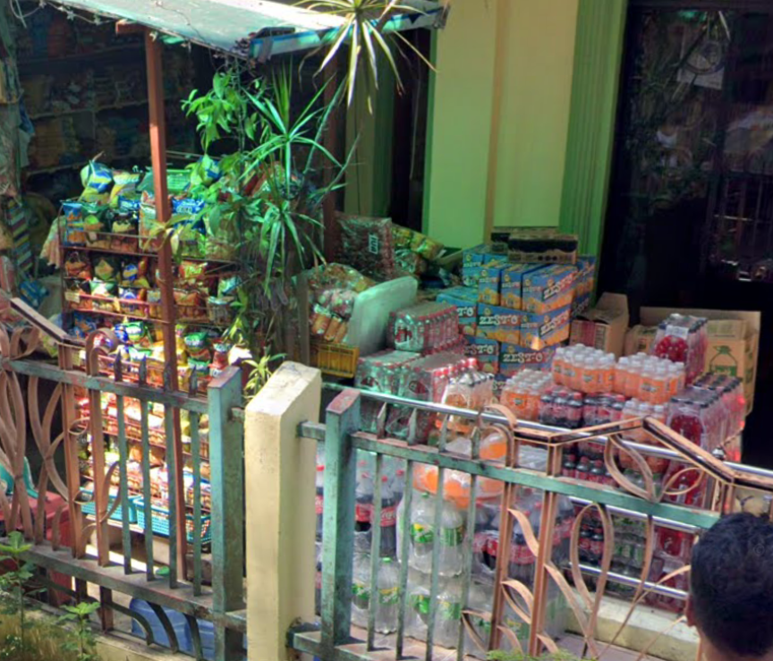
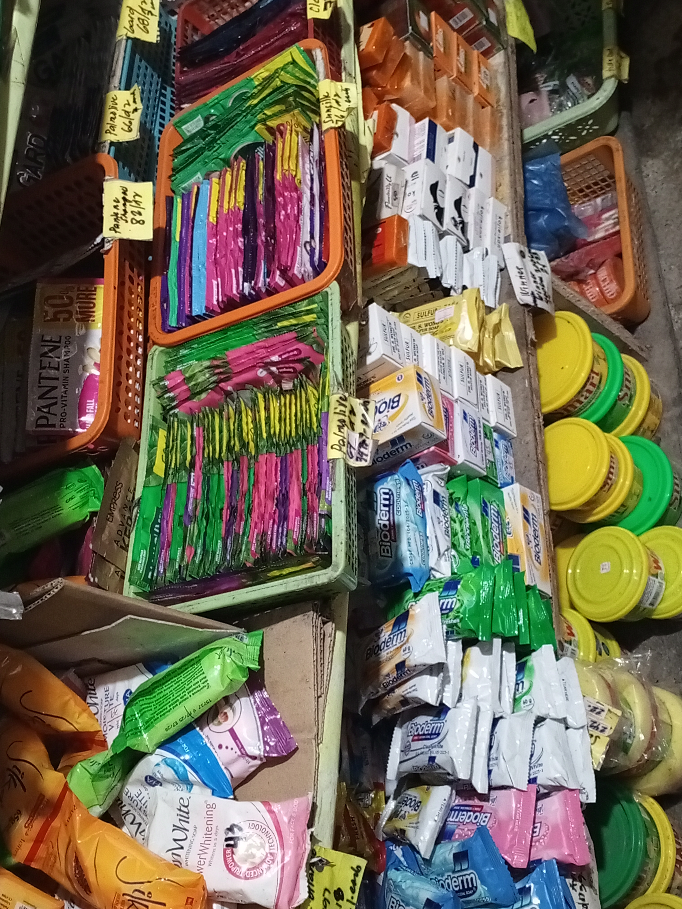
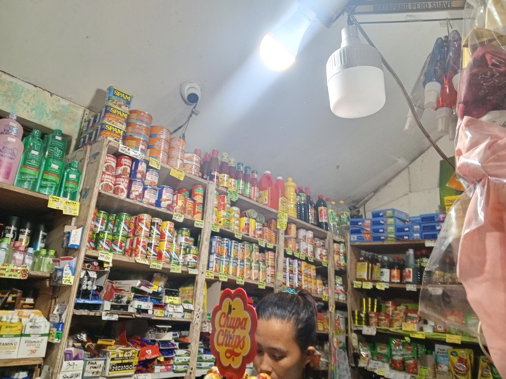

Biscuits, candies, and instant noodles. Perfect for a quick bite!
Snacks can give good nutritional value to our body when we choose the right food. Many healthy snacks like fruits, nuts, yogurt, bread, and vegetables contain important vitamins and minerals. For example, fruits such as bananas and apples have Vitamin C, which strengthens our immune system and helps our body fight sickness. Nuts and seeds have Vitamin E, which protects our cells and keeps our skin healthy. Dairy snacks like yogurt contain Vitamin D and Calcium, which help build strong bones and teeth. Some snacks like carrots or sweet potatoes have Vitamin A, which keeps our eyes clear and healthy. These nutrients give us energy, support growth, and help our body work well every day.
Instant noodles are sometimes eaten as snacks too, but they are not as nutritious. They usually have very low vitamins and are high in sodium, which can make you tired or thirsty if eaten often. Some instant noodle brands add small amounts of Vitamin B (like B1, B2, or B3) because these vitamins help with energy, but the amount is usually small. Instant noodles can fill your stomach quickly, but they do not give the same nutrients as fresh snacks like fruits or nuts. It’s okay to eat instant noodles sometimes, but choosing healthier snacks more often can give your body the vitamins it really needs.

Refreshing Beverages
Soft drinks, bottled water, coffee, and powdered juices to quench your thirst.
Soda and Sprite are mostly made of water, sugar, and artificial flavor. They do not have vitamins A, B, C, D, or E. Instead, they have high sugar, which can give quick energy for a short time but can also lead to tiredness, tooth problems, and weight gain when taken often. Some sodas have caffeine, which may give temporary alertness but can cause headaches or trouble sleeping if over-drank. These drinks are refreshing, yes, but they do not help the body stay healthy.
Alcoholic drinks also have no vitamins and very low nutritional value. Instead, alcohol can damage the liver, weaken the immune system, and affect memory and focus when taken too much. Some alcoholic drinks may have tiny amounts of Vitamin B (like in beer), but the alcohol level is still stronger than the nutrients, which means the drink is still unhealthy overall. Alcohol can also dehydrate the body, making you feel weak instead of refreshed.
In short, sodas and alcoholic drinks do not support your health the way water, milk, fruit juice, or smoothies do. It’s okay to drink soda or alcohol sometimes, but choosing healthier drinks more often can help you stay energetic, focused, and strong.

Household Essentials
Soap, shampoo sachets, cooking oil, and basic medicines. All the necessities in one place.
Household essentials like soap, shampoo, and other washing products help keep you and your home clean, fresh, and healthy every day. These items are important because they protect you from germs and make daily life more comfortable. So don’t hesitate to buy them—having the right essentials at home makes everything easier and helps you feel more confident and cared for.

Can Goods
Sairdines, Beef Loaf, etc.
Canned goods are convenient and easy to prepare, and many of them still offer good nutritional value depending on what is inside the can. Canned tuna and sardines provide protein, Omega-3 fatty acids, and Vitamin D, which help build strong muscles, support brain function, and strengthen the bones. Canned beans contain fiber, protein, and B vitamins that help digestion and give long-lasting energy. Even canned fruits and vegetables can still provide Vitamin C, Vitamin A, and fiber, which help boost the immune system and keep the eyes healthy. Corned beef and other canned meat products give protein and iron, but they also contain high sodium and fat, so they should be eaten in moderation.
However, many canned goods come with added salt, sugar, or preservatives, which can make them less healthy when eaten too often. Canned meats can be high in fat, and canned fruits sometimes have extra sugar that reduces their nutritional benefits. Still, when chosen wisely, canned goods can be a helpful and nutritious option, especially when fresh foods are not available. It’s better to pick canned tuna, sardines, or beans because they offer more vitamins and minerals compared to other types.
It’s okay to rely on canned goods sometimes, especially on busy days, but try to balance them with fresh food and plenty of water. Making small healthy choices—even something simple like choosing the healthier canned option—can already help your body stay strong, energized, and ready for your daily tasks. You are doing your best, and every good choice you make for your health is a step forward.